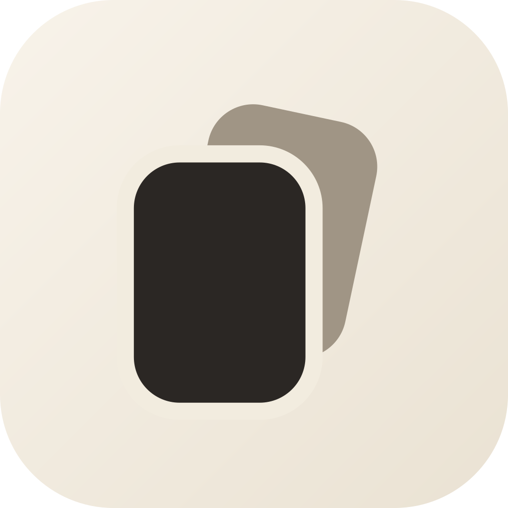

Local AI · Git · any editor
No plugin or export step. They work with ordinary files.

Architecture
Markdown remains the durable file on disk. Yjs becomes the live editing state. Noam keeps both convergent while every human and AI change follows the same permissioned path.
No plugin or export step. They work with ordinary files.
Your vault stays readable, diffable, and useful without Noam or its server.
Search, backlinks, and tags can be rebuilt from the files.
A person edits raw Markdown, not a hidden rich-text model.
Concurrent human and AI changes merge as operations.
Diffs inward. Atomic writes outward. Echoes suppressed.
Yjs updates become their local .md file. Awareness carries live cursors.